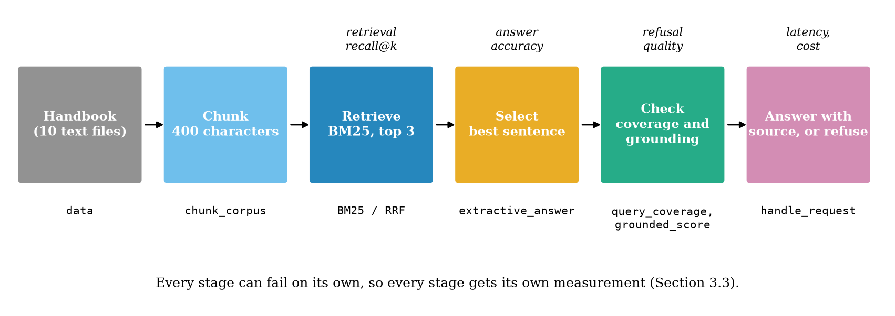
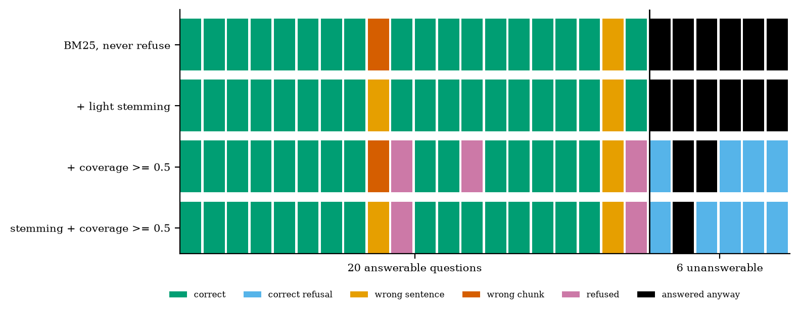
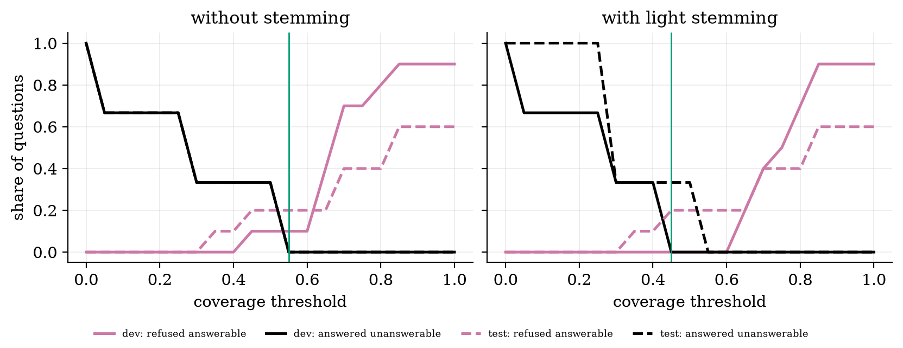
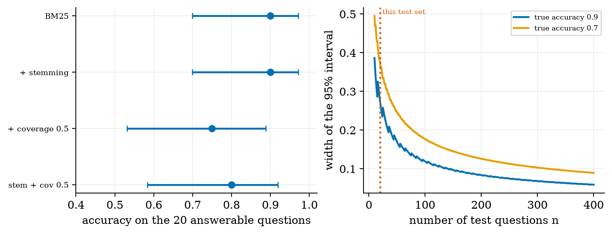
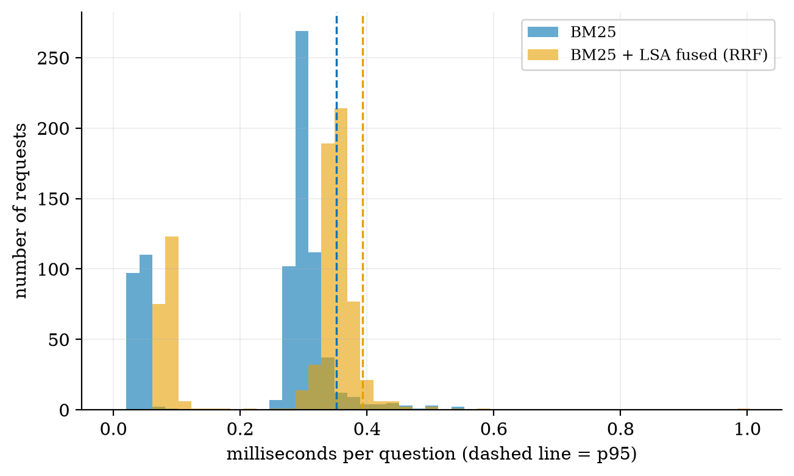

Capstone: a Grounded Assistant, Built, Evaluated and Deployed
Combine retrieval, evaluation and a service into one project: design brief, stage-wise diagnosis, refusal, confidence intervals, and ten project briefs.
turn a project idea into a design brief: user, data, minimum version, one metric, main risk;
build an end-to-end document assistant that answers with a source or refuses, and say which stage caused each wrong answer;
design an evaluation set with answerable and unanswerable questions, split into development and test halves, and report confidence intervals;
choose a refusal threshold from the cost of each kind of mistake;
wrap the assistant in a validated service, measure latency, and write down its limits.
The big picture
The capstone combines the units into one system you can defend with numbers. The worked example is a college information assistant over a handbook of a fictional college: ten short files, 26 hand-written questions (20 answerable, 6 not). It has no language model: its generator quotes the best sentence, so every failure belongs to retrieval, selection or the refusal rule.
Measure each stage. Without a refusal rule the assistant is right on 18 of 20 answerable questions (0.90, 95% interval 0.70 to 0.97) and answers all 6 unanswerable ones. Light stemming fixes the one retrieval miss (“Saturday” against “Saturdays”), and the failure moves to sentence selection. With stemming on, a coverage threshold of 0.5 refuses 5 of the 6 unanswerable questions, at the price of refusing 2 answerable ones.
Honest limits. 26 questions give wide intervals; the three unanswerable questions in each half mean one question moves a refusal rate by 33 points. The threshold chosen on the development half made no mistake there, but on the test half it answered 1 of 3 unanswerable questions. These results say nothing about how a real LLM would score.
Key equations
Stage-wise accuracy: the answer is correct (C) if retrieval worked (A) and the selection then worked.
Coverage: the share of the question’s content words found in the top chunk.
Answer only if the probability that the handbook has the answer exceeds this; cH is the cost of a hallucination, cF of a false refusal.
Wilson interval for a proportion, derived from a quadratic in p.
Figures

The six stages and what each one is measured by.

One square per question and one row per configuration: correct, wrong chunk, wrong sentence, refused, correct refusal, answered anyway.

Failure modes against the coverage threshold on the development half (solid) and the test half (dashed).

Accuracy with 95% Wilson intervals, and how the interval narrows with the number of questions.

Time per question on this CPU, with 95th percentiles (a toy service, not an LLM).
Run the code yourself
Everything needs only NumPy and matplotlib (FastAPI only for the optional service). After downloading and unzipping the All code (.zip):
pip install -r requirements.txt
python codes/capstone/campus_assistant/campus_assistant.py # the evaluation table
python codes/capstone/campus_assistant/tests/test_campus_assistant.py # 6 tests, prints: ok
python figures/fig02_outcomes.py # which stage failed, per question
cd codes/capstone/campus_assistant && uvicorn app_fastapi:app --port 8000 # optional HTTP service
Replace the files in data/ and the questions in data/queries.json with your own to start your project. There is no Colab notebook for this unit: a real language model has not been run on these questions.
The lab track maps all fourteen syllabus labs to the code of the units; this unit is Lab 14.
Self-check
Answer in your head first, then click to reveal.
What five things go into a design brief?
The user, the data, the minimum viable version, the one metric, and the main risk.
Why must an evaluation set contain unanswerable questions?
Only they measure refusal and hallucination; a system that always answers cannot be told apart from one that knows when to stop.
A system is right on 18 of 20 questions. Is “90% accurate” safe to claim?
No: the 95% Wilson interval is 0.70 to 0.97. State the interval and the number of questions.
Why choose the threshold on one half and report on the other?
A setting tuned on the numbers you report always looks better than it is. Here the chosen threshold made no mistake on the development half but answered 1 of 3 unanswerable test questions.
A wrong chunk and a wrong sentence from the right chunk: same problem?
No. The first is a retrieval problem (vocabulary, ranking, chunking); the second is a selection or reading problem. They have different fixes.